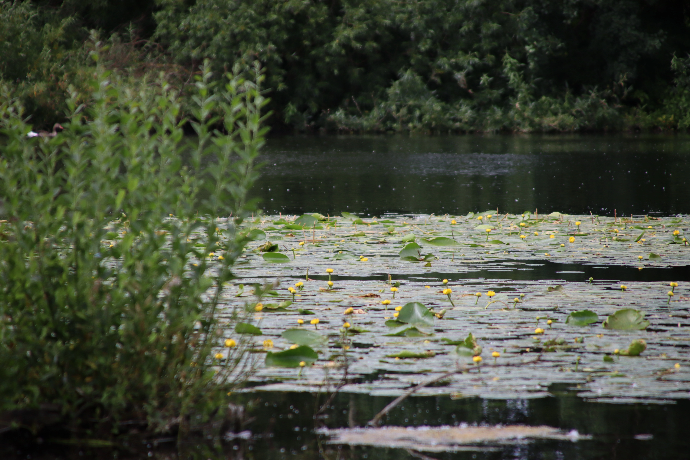
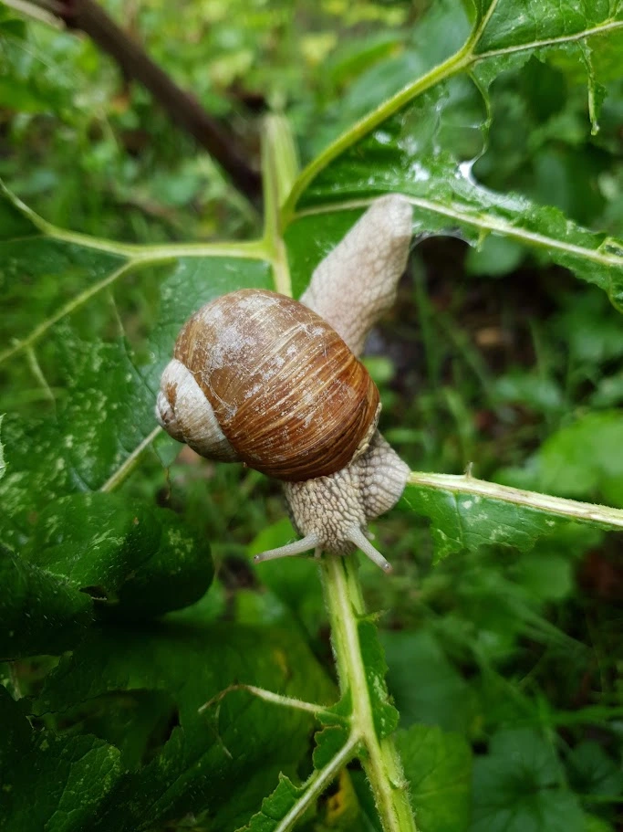
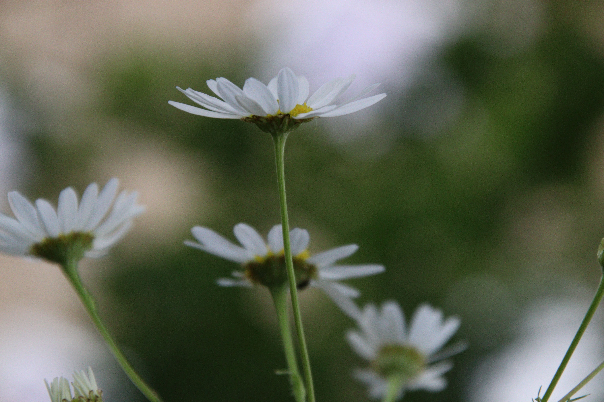
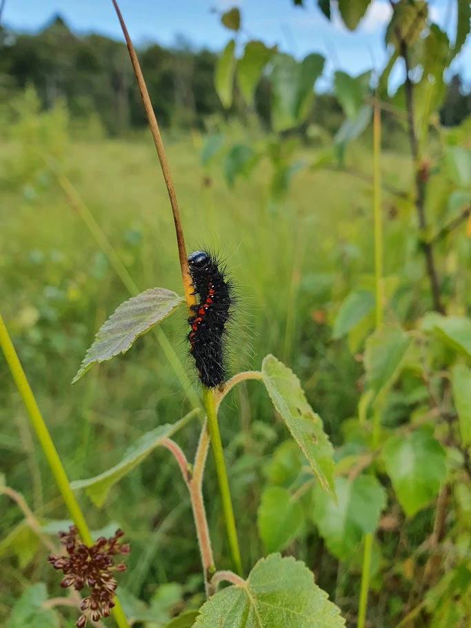
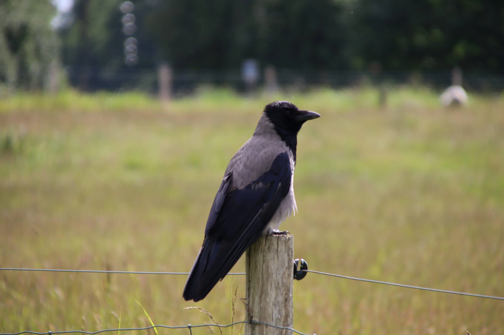
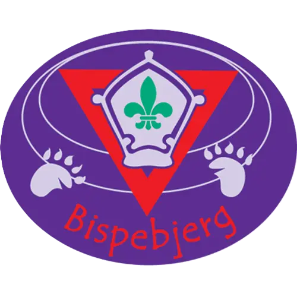
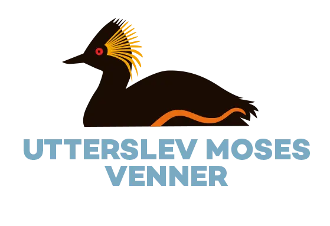
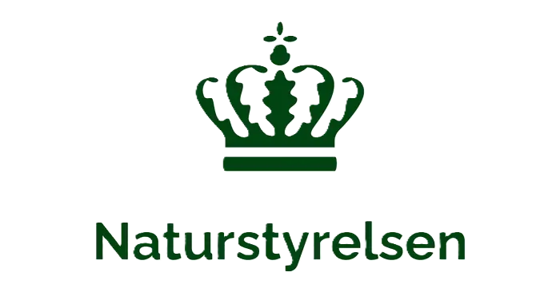
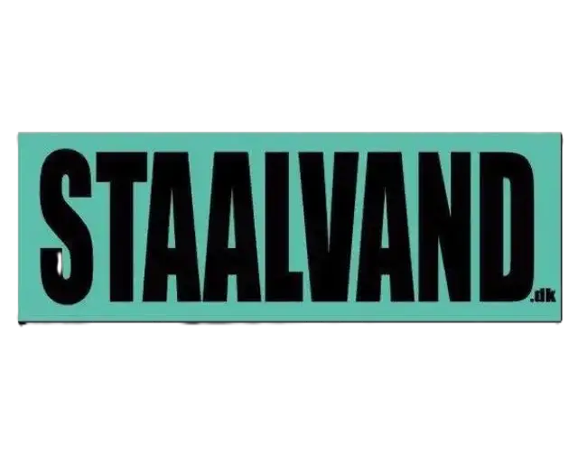
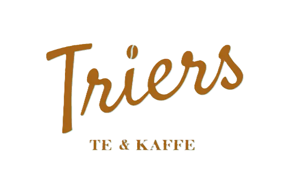

230
Hektar natur
500
Plantearter
5
Flagermusearter
3
Søer
Mosemissionen
Hvor mange planter og dyr kan du egentlig genkende?
Tag med på en spændende opdagelsesrejse i naturen, hvor du lærer at identificere arter, udforske biodiversiteten og opdage de små detaljer, der gør vores natur helt unik.
Uanset om du er studerende, naturentusiast, skoleklasse eller familie, er der plads til dig. Kom med ud, bliv klogere på naturen, og oplev hvor meget liv der gemmer sig lige omkring os!

Se programmet her!
Få et overblik over dagens aktiviteter, spændende workshops og inspirerende oplæg. Se, hvad der venter dig til Mosemissionen, og planlæg din dag i mosen! 🌿
Se program her →Tilmeld dig her!
Tilmeld dig Mosemissionen, og vær med til en dag fyldt med naturoplevelser, spændende aktiviteter og nye opdagelser. Vi glæder os til at se dig! 🌿
Tilmeld her →


Naturlivet i mosen
Utterslev Mose er hjem for et rigt og varieret plante- og dyreliv, hvor hver art spiller en vigtig rolle i naturens balance.
Fra vilde blomster og summende insekter til fugle langs vandkanten gemmer mosen på et væld af spændende arter. Her finder du både liv over og under vandoverfladen, og med lidt nysgerrighed kan du opdage meget mere, end øjet først fanger.
Gå på opdagelse i mosens biodiversitet, og lær de mange arter bedre at kende.
Udstyr dig med nysgerrighed!
En interaktiv oplevelse, hvor man ikke bare går en tur i naturen, men får redskaberne til selv at gå på opdagelse.
Mød os ved startpunktet
Når du ankommer, står vores naturvejledere klar til at tage imod dig. Her får du udleveret en lille udforskningspakke med:
- 🔍 En lup - kom helt tæt på mosens små beboere.
- 🗺️ Et kort - find vej gennem området og opdag nye steder.
- 📖 Et artskompendie - lær at kende forskel på insekterne vha. enkelte bestemmelsesnøgler
Derefter er du klar til at udforske mosen i dit eget tempo. Og har du brug for hjælp undervejs, står vores naturvejledere klar med gode råd og spændende viden.
Noget for alle nysgerrige!
noget med noget
For familien
Gør naturen til en fælles opdagelsesrejse. Børnene kan gå på insektjagt, løse små opgaver og undersøge, hvad der gemmer sig i græsset.
For de studerene
Få praktisk erfaring med artsbestemmelse, biodiversitet og feltarbejde. En oplagt mulighed for at afprøve teorien i virkeligheden.
For de naturinteresserede
Fordyb dig i mosens biodiversitet, lær nye arter at kende, og bliv klogere på det liv, der ofte gemmer sig lige foran os.
Program
Velkommen til Mosemissionen
Check-in, udlevering af materialer og en kort introduktion til dagens event.
Åbne aktivitetsstationer og artsbestemmelse
Deltagere kan tage på udforskning i mosen og udføre dagens aktiviteter.
Bevaring af Københavns natur
Foredrag af Henrik Klemmensen om vigtigheden af at bevare byens naturområder.
Udtjekning
Udtjek kan ske hele dagen, men sidste udkald for at tjekke ud og tilbagelevere udstyr.
Kort




